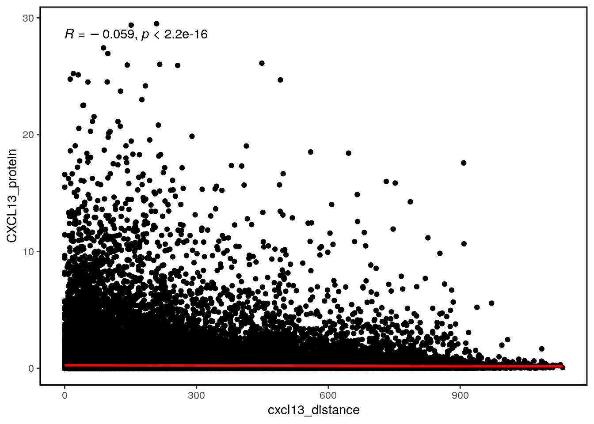
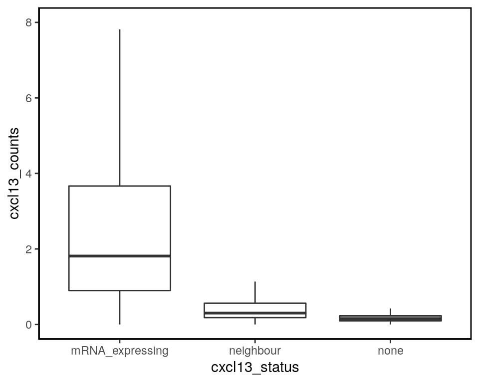
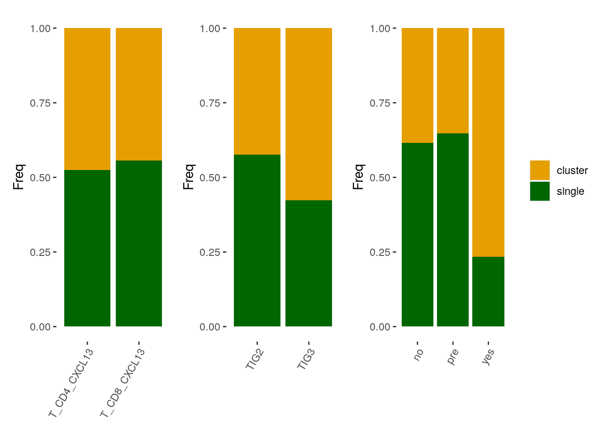
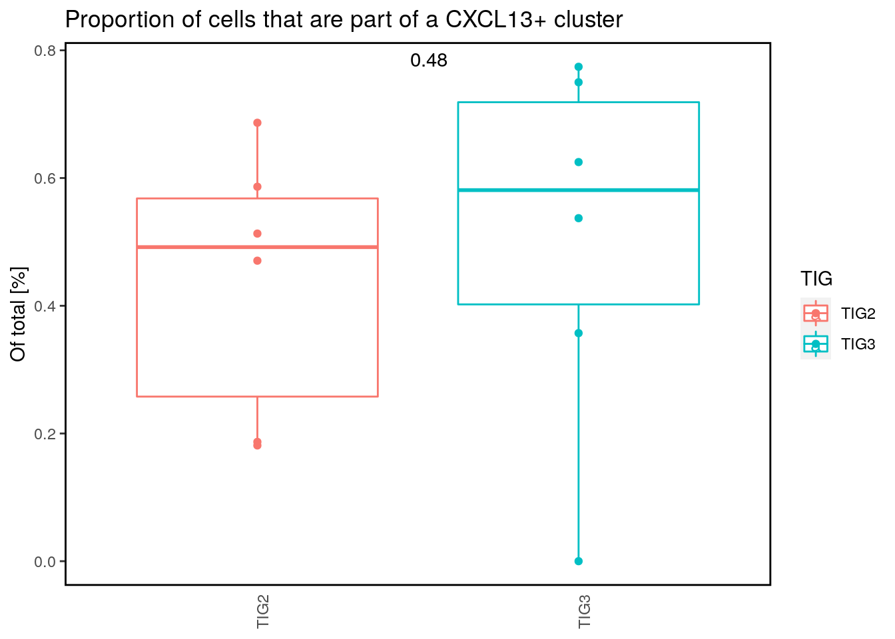

Last updated: 2020-12-04
Checks: 7 0
Knit directory: BCexh_IMC/
This reproducible R Markdown analysis was created with workflowr (version 1.6.2). The Checks tab describes the reproducibility checks that were applied when the results were created. The Past versions tab lists the development history.
Great! Since the R Markdown file has been committed to the Git repository, you know the exact version of the code that produced these results.
Great job! The global environment was empty. Objects defined in the global environment can affect the analysis in your R Markdown file in unknown ways. For reproduciblity it’s best to always run the code in an empty environment.
The command set.seed(12345) was run prior to running the code in the R Markdown file. Setting a seed ensures that any results that rely on randomness, e.g. subsampling or permutations, are reproducible.
Great job! Recording the operating system, R version, and package versions is critical for reproducibility.
Nice! There were no cached chunks for this analysis, so you can be confident that you successfully produced the results during this run.
Great job! Using relative paths to the files within your workflowr project makes it easier to run your code on other machines.
Great! You are using Git for version control. Tracking code development and connecting the code version to the results is critical for reproducibility.
The results in this page were generated with repository version 20735a1. See the Past versions tab to see a history of the changes made to the R Markdown and HTML files.
Note that you need to be careful to ensure that all relevant files for the analysis have been committed to Git prior to generating the results (you can use wflow_publish or wflow_git_commit). workflowr only checks the R Markdown file, but you know if there are other scripts or data files that it depends on. Below is the status of the Git repository when the results were generated:
Ignored files:
Ignored: analysis/.Rhistory
Untracked files:
Untracked: CD11c_CD68_scatter.png
Untracked: FigS11_TLS_celltype_frequency.pdf
Untracked: Neighbourhood_TLS_relative.png
Untracked: Neighbourhood_all_relative.png
Untracked: analysis/XX_RNApanel_neighbourhood.Rmd
Untracked: cytokine_environment.png
Untracked: data/RNAseq_Tcells.rds
Untracked: data/RNAseq_epithelial.rds
Untracked: data/ROI_info_HIER.csv
Untracked: data/ROI_info_RNAscope.csv
Untracked: data/cpout/
Untracked: data/masks/
Untracked: heatmap_markerexpression_myeloid_sub.png
Untracked: neighbourhood_myeloid_TIGdifference.png
Untracked: neighbourhood_myeloid_TLS_relative.png
Untracked: neighbourhood_myeloid_all_relative.png
Untracked: neighbourhood_myeloid_split_TLS.png
Untracked: output/ProteinPanel/
Untracked: output/RNApanel/
Untracked: output/TLS_score_25samples.png
Untracked: output/sce_ProteinPanel_afterQC.rds
Untracked: output/sce_ProteinPanel_initial.rds
Untracked: output/sce_ProteinPanel_initial_TLSrevised.rds
Untracked: output/sce_RNApanel_afterQC.rds
Untracked: output/sce_RNApanel_initial.rds
Untracked: output/sce_RNApanel_initial_TLSrevised.rds
Untracked: test.pdf
Untracked: test.png
Untracked: test_Treg_enrichment.png
Unstaged changes:
Modified: analysis/05_proteinPanel_StromalSubclustering.Rmd
Modified: analysis/07_proteinPanel_TNK_analysis.Rmd
Note that any generated files, e.g. HTML, png, CSS, etc., are not included in this status report because it is ok for generated content to have uncommitted changes.
These are the previous versions of the repository in which changes were made to the R Markdown (analysis/12_RNApanel_CXCL13_protein.Rmd) and HTML (docs/12_RNApanel_CXCL13_protein.html) files. If you’ve configured a remote Git repository (see ?wflow_git_remote), click on the hyperlinks in the table below to view the files as they were in that past version.
| File | Version | Author | Date | Message |
|---|---|---|---|---|
| Rmd | 20735a1 | SandraTietscher | 2020-12-04 | Changes of plots for paper figures |
| html | a0ae2bf | SandraTietscher | 2020-12-02 | Build site. |
| Rmd | d475008 | SandraTietscher | 2020-12-02 | Plot changes for paper figures |
| html | 75b9d1e | SandraTietscher | 2020-11-19 | Build site. |
| Rmd | 29fd855 | SandraTietscher | 2020-11-19 | Check single-vs-cluster proportions for CXCL13+ T cells |
| html | 6dabd20 | SandraTietscher | 2020-11-18 | Build site. |
| Rmd | baf8e47 | SandraTietscher | 2020-11-18 | Update introduction |
| html | e23002a | SandraTietscher | 2020-11-18 | Build site. |
| Rmd | edff58e | SandraTietscher | 2020-11-18 | Script to analyse relation of CXCL13 protein to mRNA |
This script adresses the question of how far away from the CXCL13 transcript-expressing cell CXCL13 protein can still be detected.
library(SingleCellExperiment)
library(ggplot2)
library(scater)
library(igraph)
library(reshape2)
library(cowplot)
library(ggridges)
library(tidyverse)
library(viridis)
library(dplyr)
library(sp)
library(sf)
library(RANN)
library(concaveman)
library(ggpubr)
library(data.table)
library(patchwork)
sce = readRDS(file = "output/RNApanel/sce_RNApanel_cytokines_communities.rds")
TIG2 <- c("TBB111", "TBB129", "TBB165", "TBB171", "TBB184", "TBB338")
# Read object relationship file (output from Cellprofiler)
dat_relation <- fread("data/cpout/Object_relationships_RNApanel.csv")
dat_relation$cellA <- paste0(dat_relation$`First Image Number`, "_", dat_relation$`First Object Number`)
dat_relation$cellB <- paste0(dat_relation$`Second Image Number`, "_", dat_relation$`Second Object Number`)```{r-RNA-protein-boxplot, fig.width=3, fig.height=4} sce_T <- sce[,which(sce$celltype %in% c(“T_CD8”, “T_CD4”))] CXCL13_exp <- data.frame(mRNA = as.factor(sce_T$CXCL13_mRNA_expression), protein = assay(sce_T, “counts”)[“CXCL13_protein”,])
ggplot(CXCL13_exp, aes(x=mRNA, y = protein))+ #geom_violin(width=1, fill = “black”)+ geom_boxplot(outlier.shape = NA)+ stat_compare_means(label = “p.format”, method = “wilcox”, label.x.npc = “middle”)+ theme(panel.border = element_rect(color = “black”, fill = NA, size = 1), panel.background = element_blank())+ xlab(“CXCL13 mRNA expression”)+ ylab(“CXCL13 protein counts”)+ coord_cartesian(ylim = c(0,10))
# Calculate distance to the next CXCL13_mRNA expressing cell (for each cell)
For images in which there is no CXCL13_mRNA positive cell --> set distance parameter to NA and exclude for further analysis.
```r
cur_sce <- data.frame(colData(sce))
cellIDs_cxcl13 <- cur_sce[cur_sce[,"CXCL13_mRNA_expression"] == 1,]
new_sce <- data.frame(matrix(ncol=length(colnames(cur_sce))+1, nrow = 0))
# For each image separately: nearest neighbour search
for (j in unique(cur_sce$ImageNumber)) {
cur_sce_j <- filter(cur_sce, ImageNumber == j)
cxcl13_j <- filter(cellIDs_cxcl13, ImageNumber == j)[,c("Center_X", "Center_Y")]
if (nrow(cxcl13_j) == 0) {
cur_sce_j$cxcl13_distance <- NA
} else {
j_coord <- cur_sce_j[,c("Center_X", "Center_Y")]
nn <- RANN::nn2(cxcl13_j, j_coord)
cur_sce_j$cxcl13_distance <- nn$nn.dists[,1]
}
new_sce <- rbind(cur_sce_j, new_sce)
}new_sce$CXCL13_protein <- assay(sce, "counts")["CXCL13_protein",]
new_sce_sub <- new_sce[!is.na(new_sce$cxcl13_distance),]
# Remove outlier cells (mean counts > 30)
new_sce_sub <- new_sce_sub[new_sce_sub$CXCL13_protein <= 30,]
# Bin the distances
breaks <- seq(from = 0, to = 1000, by = 5)
new_sce_sub$distance_tag <- cut(new_sce_sub$cxcl13_distance, breaks = breaks, include.lowest = TRUE, right = TRUE)
ggplot(new_sce_sub, aes(cxcl13_distance, CXCL13_protein)) +
geom_point()+
geom_smooth(method = lm, color = "red", se=FALSE)+
stat_cor(method="spearman")+
theme(axis.line.x = element_line(colour = "black", size = 0.25),
axis.line.y = element_line(colour = "black", size = 0.25),
panel.grid.major = element_blank(),
panel.grid.minor = element_blank(),
panel.border = element_rect(colour = "black", fill=NA, size=1),
panel.background = element_blank())
| Version | Author | Date |
|---|---|---|
| e23002a | SandraTietscher | 2020-11-18 |
cxcl13_shortID <- paste0(cellIDs_cxcl13$ImageNumber, "_", cellIDs_cxcl13$CellNumber)
# Subset neighbourhood list
dat_relation_sub <- dat_relation %>% filter(cellA %in% cxcl13_shortID | cellB %in% cxcl13_shortID)
neighbours <- unique(c(dat_relation_sub$cellA, dat_relation_sub$cellB))
neighbours <- setdiff(neighbours, cxcl13_shortID)
# Add information to colData
cur_sce$shortID <- paste0(cur_sce$ImageNumber, "_", cur_sce$CellNumber)
cur_sce$cxcl13_status <- ifelse(cur_sce$shortID %in% cxcl13_shortID, "mRNA_expressing", ifelse(cur_sce$shortID %in% neighbours, "neighbour", "none"))
cur_sce$cxcl13_counts <- assay(sce, "counts")["CXCL13_protein",]
# Plot
ggplot(cur_sce, aes(cxcl13_status, cxcl13_counts))+
geom_boxplot(outlier.shape = NA)+
coord_cartesian(ylim=c(0, 8))+
theme(axis.line.x = element_line(colour = "black", size = 0.25),
axis.line.y = element_line(colour = "black", size = 0.25),
panel.grid.major = element_blank(),
panel.grid.minor = element_blank(),
panel.border = element_rect(colour = "black", fill=NA, size=1),
panel.background = element_blank())
| Version | Author | Date |
|---|---|---|
| e23002a | SandraTietscher | 2020-11-18 |
sce_T_CXCL13 <- sce[,which(sce$subtype %in% c("T_CD4_CXCL13", "T_CD8_CXCL13"))]
sce_T_CXCL13$CXCL13_cluster <- ifelse(sce_T_CXCL13$cxcl13_mrnaonly_clust == 0, "single", "cluster")
tab_subtype <- as.data.frame(prop.table(table(sce_T_CXCL13$subtype, sce_T_CXCL13$CXCL13_cluster), margin = 1))
tab_TIG <- as.data.frame(prop.table(table(sce_T_CXCL13$TIG, sce_T_CXCL13$CXCL13_cluster), margin = 1))
tab_TLS <- as.data.frame(prop.table(table(sce_T_CXCL13$TLS, sce_T_CXCL13$CXCL13_cluster), margin = 1))
p_subtype <- ggplot(tab_subtype, aes(Var1, Freq, fill = Var2))+
geom_bar(stat = "identity")+
scale_fill_manual(values = c("#E69F00", "#006600"))+
theme(axis.title.x=element_blank(),panel.background = element_blank(), axis.text.x = element_text(angle = 60, hjust = 1), legend.position = "none")
p_TIG <- ggplot(tab_TIG, aes(Var1, Freq, fill = Var2))+
geom_bar(stat = "identity")+
scale_fill_manual(values = c("#E69F00", "#006600"))+
theme(axis.title.x=element_blank(),panel.background = element_blank(), axis.text.x = element_text(angle = 60, hjust = 1), legend.position = "none")
p_TLS <- ggplot(tab_TLS, aes(Var1, Freq, fill = Var2))+
geom_bar(stat = "identity")+
scale_fill_manual(values = c("#E69F00", "#006600"))+
theme(axis.title.x=element_blank(),panel.background = element_blank(), axis.text.x = element_text(angle = 60, hjust = 1), legend.title = element_blank())
p <- (p_subtype + p_TIG) + p_TLS
p
tab_sample <- as.data.frame(prop.table(table(sce_T_CXCL13$sample, sce_T_CXCL13$CXCL13_cluster), margin = 1))
tab_sample <- filter(tab_sample, Var2 == "cluster")
colnames(tab_sample) <- c("sample", "cluster", "proportion")
tab_sample$TIG <- ifelse(tab_sample$sample %in% TIG2, "TIG2", "TIG3")
ggplot(tab_sample, aes(x= TIG, y = proportion, color=TIG))+
geom_boxplot()+
geom_point()+
theme(axis.ticks.x = element_blank(),
axis.text.x=element_text(angle = 90, hjust=1),
axis.title.x = element_blank(),
panel.background = element_blank(),
panel.border = element_rect(color = "black", fill = NA, size = 1),
strip.background = element_blank(),
legend.background = element_blank())+
ylab("Of total [%]")+
stat_compare_means(method = "wilcox.test", aes(label=..p.format..), label.x.npc = 0.5)+
ggtitle("Proportion of cells that are part of a CXCL13+ cluster")
sessionInfo()R version 4.0.2 (2020-06-22)
Platform: x86_64-pc-linux-gnu (64-bit)
Running under: Ubuntu 20.04 LTS
Matrix products: default
BLAS/LAPACK: /usr/lib/x86_64-linux-gnu/openblas-openmp/libopenblasp-r0.3.8.so
locale:
[1] LC_CTYPE=en_US.UTF-8 LC_NUMERIC=C
[3] LC_TIME=en_US.UTF-8 LC_COLLATE=en_US.UTF-8
[5] LC_MONETARY=en_US.UTF-8 LC_MESSAGES=C
[7] LC_PAPER=en_US.UTF-8 LC_NAME=C
[9] LC_ADDRESS=C LC_TELEPHONE=C
[11] LC_MEASUREMENT=en_US.UTF-8 LC_IDENTIFICATION=C
attached base packages:
[1] parallel stats4 stats graphics grDevices utils datasets
[8] methods base
other attached packages:
[1] patchwork_1.0.1 data.table_1.13.0
[3] ggpubr_0.4.0 concaveman_1.1.0
[5] RANN_2.6.1 sf_0.9-6
[7] sp_1.4-2 viridis_0.5.1
[9] viridisLite_0.3.0 forcats_0.5.0
[11] stringr_1.4.0 dplyr_1.0.1
[13] purrr_0.3.4 readr_1.3.1
[15] tidyr_1.1.1 tibble_3.0.3
[17] tidyverse_1.3.0 ggridges_0.5.2
[19] cowplot_1.0.0 reshape2_1.4.4
[21] igraph_1.2.5 scater_1.16.2
[23] ggplot2_3.3.2 SingleCellExperiment_1.10.1
[25] SummarizedExperiment_1.18.2 DelayedArray_0.14.1
[27] matrixStats_0.56.0 Biobase_2.48.0
[29] GenomicRanges_1.40.0 GenomeInfoDb_1.24.2
[31] IRanges_2.22.2 S4Vectors_0.26.1
[33] BiocGenerics_0.34.0 workflowr_1.6.2
loaded via a namespace (and not attached):
[1] ggbeeswarm_0.6.0 colorspace_1.4-1
[3] ggsignif_0.6.0 rio_0.5.16
[5] ellipsis_0.3.1 class_7.3-17
[7] rprojroot_1.3-2 XVector_0.28.0
[9] BiocNeighbors_1.6.0 fs_1.5.0
[11] rstudioapi_0.11 farver_2.0.3
[13] fansi_0.4.1 lubridate_1.7.9
[15] xml2_1.3.2 splines_4.0.2
[17] knitr_1.29 jsonlite_1.7.0
[19] broom_0.7.0 dbplyr_1.4.4
[21] compiler_4.0.2 httr_1.4.2
[23] backports_1.1.8 assertthat_0.2.1
[25] Matrix_1.2-18 cli_2.0.2
[27] later_1.1.0.1 BiocSingular_1.4.0
[29] htmltools_0.5.0 tools_4.0.2
[31] rsvd_1.0.3 gtable_0.3.0
[33] glue_1.4.1 GenomeInfoDbData_1.2.3
[35] Rcpp_1.0.5 carData_3.0-4
[37] cellranger_1.1.0 vctrs_0.3.2
[39] nlme_3.1-148 DelayedMatrixStats_1.10.1
[41] xfun_0.16 openxlsx_4.1.5
[43] rvest_0.3.6 lifecycle_0.2.0
[45] irlba_2.3.3 rstatix_0.6.0
[47] zlibbioc_1.34.0 scales_1.1.1
[49] hms_0.5.3 promises_1.1.1
[51] curl_4.3 yaml_2.2.1
[53] gridExtra_2.3 stringi_1.4.6
[55] e1071_1.7-3 zip_2.0.4
[57] BiocParallel_1.22.0 rlang_0.4.7
[59] pkgconfig_2.0.3 bitops_1.0-6
[61] evaluate_0.14 lattice_0.20-41
[63] labeling_0.3 tidyselect_1.1.0
[65] plyr_1.8.6 magrittr_1.5
[67] R6_2.4.1 generics_0.0.2
[69] DBI_1.1.0 mgcv_1.8-31
[71] foreign_0.8-80 pillar_1.4.6
[73] haven_2.3.1 whisker_0.4
[75] withr_2.2.0 units_0.6-7
[77] abind_1.4-5 RCurl_1.98-1.2
[79] car_3.0-8 modelr_0.1.8
[81] crayon_1.3.4 KernSmooth_2.23-17
[83] rmarkdown_2.3 grid_4.0.2
[85] readxl_1.3.1 blob_1.2.1
[87] git2r_0.27.1 reprex_0.3.0
[89] digest_0.6.25 classInt_0.4-3
[91] httpuv_1.5.4 munsell_0.5.0
[93] beeswarm_0.2.3 vipor_0.4.5